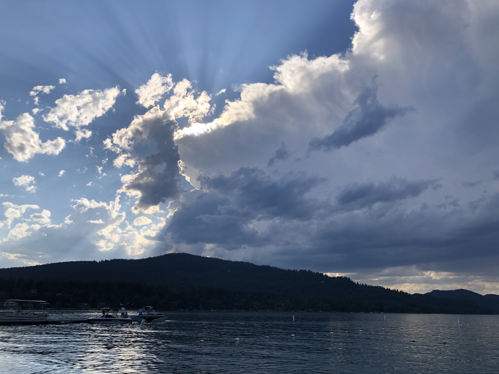

Page 5
Page 5
Whitefish Lake
God's glory is shining through the clouds

A very recent photo I took after my move to Montana is this beautiful photo taken at Whitefish Lake.
About fifteen minutes away from where I currently live, Whitefish Lake is a beautiful natural lake.
Some famous people like Mel Gibson live near this lake. I was with some friends at Whitefish City Beach
and it started to rain and then I saw the clouds moving forming this amazing effect with the rays of the sun.
To me it looks as if God's glory is shining through the clouds.
Table Of Contents
Back
Next